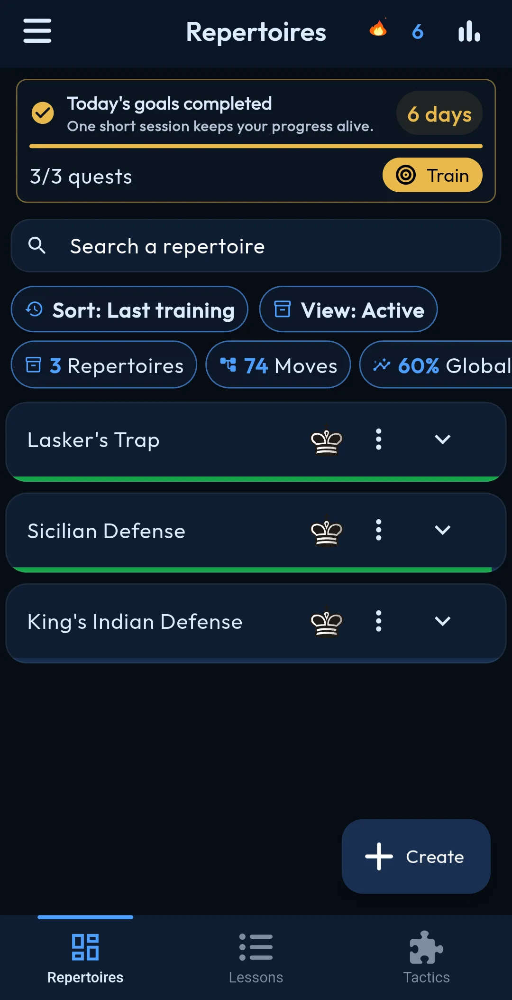
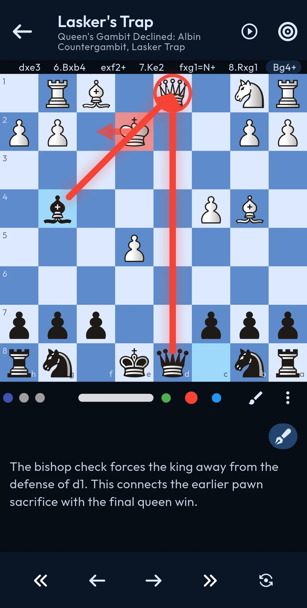
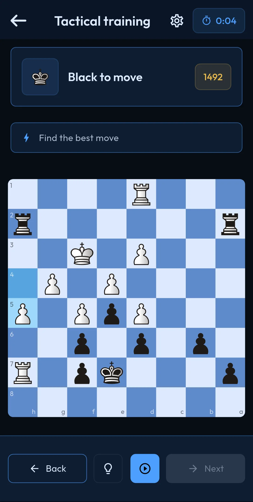
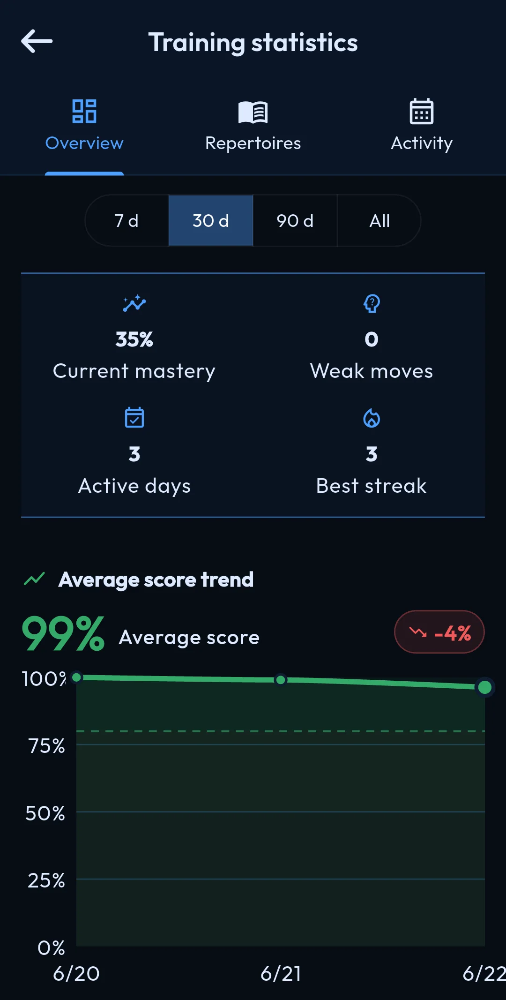

Vos répertoires, à votre façon
Créez vos lignes coup par coup ou importez-les depuis un fichier PGN, Lichess ou Chess.com.
e4e5Cf3Cc6
Disponible sur Android
Construisez votre répertoire d’ouvertures, importez vos parties et entraînez chaque variante jusqu’à ce qu’elle devienne un réflexe.
Fonctionnalités
ChessFlow relie apprentissage, pratique et progression dans une expérience claire, conçue pour vous faire jouer les bons coups au bon moment.
Créez vos lignes coup par coup ou importez-les depuis un fichier PGN, Lichess ou Chess.com.
Travaillez chaque variante activement et revenez sur les coups qui vous résistent.
Aiguisez votre tactique avec plusieurs modes, séries et défis quotidiens.
Repérez vos points faibles grâce aux statistiques détaillées et mesurez votre régularité.
Personnalisez l’échiquier, les pièces, les thèmes et les palettes de couleurs.
Retrouvez vos ouvertures et votre progression sur vos appareils grâce à la synchronisation cloud.
Méthode d’apprentissage
Mémoriser une liste de coups ne suffit pas. ChessFlow transforme votre répertoire en exercices interactifs pour apprendre les variantes, repérer vos erreurs et réviser régulièrement.
Créez vos lignes sur l’échiquier ou importez un PGN depuis un fichier, une étude Lichess ou une partie Chess.com. Classez ensuite vos ouvertures avec les Blancs et les Noirs.
Jouez vous-même les bons coups face aux réponses adverses. Cet entraînement actif aide à retenir les positions et les idées bien mieux qu’une simple lecture.
Identifiez les coups faibles, consultez vos statistiques et concentrez vos prochaines sessions sur les ouvertures qui demandent encore du travail.
Questions fréquentes
Travaillez un répertoire limité, comprenez les idées principales puis entraînez-vous à retrouver les coups sans les regarder. ChessFlow organise ces lignes et mesure votre maîtrise au fil des sessions.
Oui. ChessFlow accepte l’import PGN depuis un fichier ou du texte, ainsi que les liens d’études Lichess et de parties compatibles.
Oui. L’application convient aux joueurs qui découvrent les ouvertures comme à ceux qui possèdent déjà un répertoire et souhaitent le structurer, le réviser et suivre leurs progrès.
Dans l’application
Quatre espaces, un seul objectif : transformer votre travail aux échecs en progrès concret.

repertoires.webp
training.webp
puzzles.webp
statistics.webpÀ vous de jouer
Téléchargez ChessFlow gratuitement et commencez votre prochain entraînement aujourd’hui.